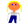
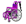
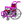
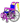
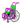
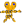
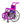
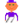
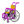

דמויות
דמויות ראשיות
-
 זופיקסי — נער בן 16 עם שיער זהוב.
זופיקסי — נער בן 16 עם שיער זהוב.
- אביו של זופיקסי — בן 40, טכנאי מחשבים.
-

אמו של זופיקסי — בת 37, מהנדסת ניהול ביתי. - כלב הנחייה של זופיקסי — גולדן רטריבר המסייע לו.
-

פורפלטן — ילדה בת 10 שהיא כיסא גלגלים חי. -

אביה של פורפלטן — כיסא גלגלים אדום בן 40. -

אמה של פורפלטן — כיסא גלגלים כחול בת 38. -

הדוד של פורפלטן — כיסא גלגלים חי בצבע כחול‑ירקרק, עובד כבלש. -

מר אוידוהומברה — אדם המורכב כולו מאוזניים; הוא חירש והוא הנבל.
דמויות משניות
-

משטרת הכיסאות החיים — כיסאות גלגלים מפוספסים המשמשים ככוחות אכיפה. -

משטרת העולם האמיתי — שוטרים אנושיים המופיעים בסיפור. -

זופיקסי ג’וניור — בנו של זופיקסי, שגילו משתנה לאורך הסיפור.